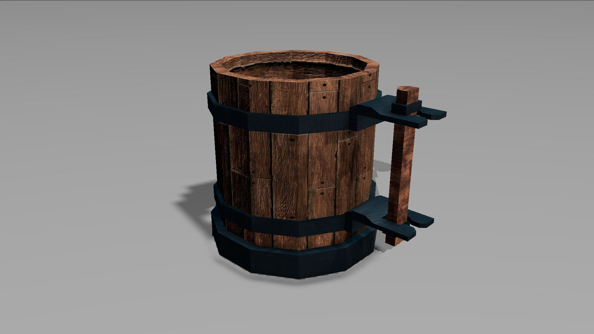
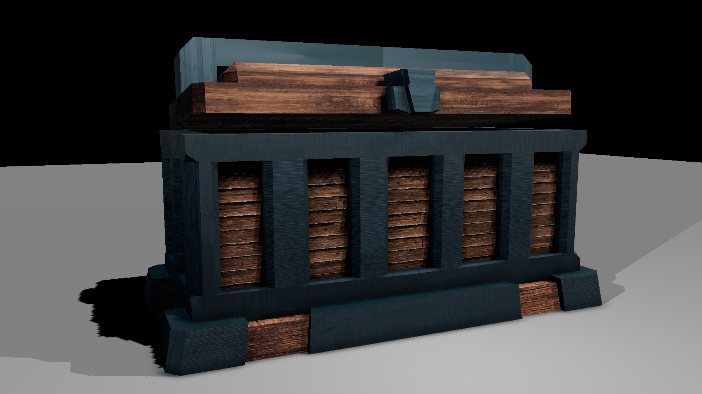
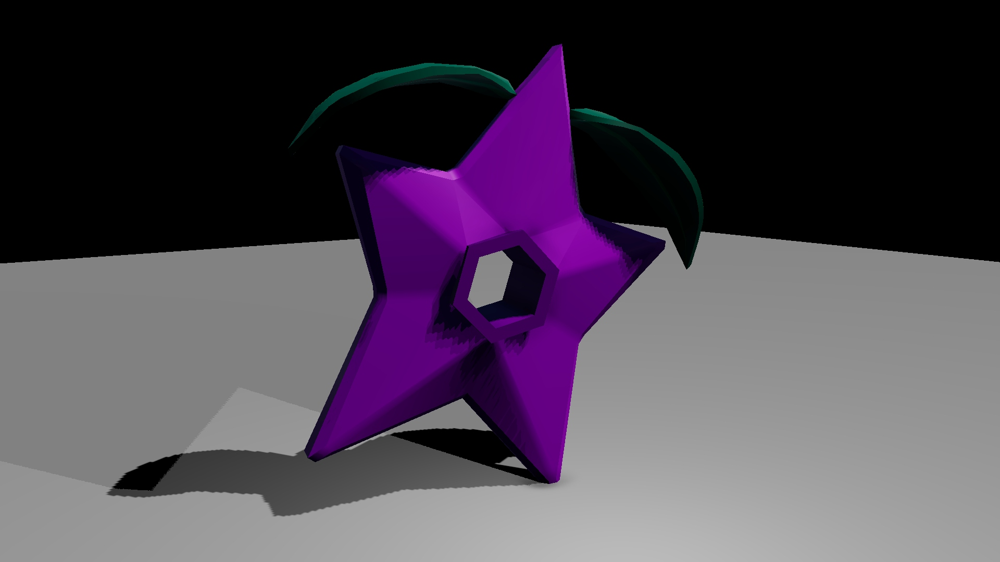

Year 1 — 04
Portfolio · Case Study
A first-year module introducing the fundamentals of 3D — modelling, texturing, lighting and game-engine integration. The work below was produced through this module.
01 · Asset Renders
Stylised props modelled, textured and rendered as part of a tavern-themed environment — exploring silhouette, material and game-ready proportions.



Drinking vessel
Chest
Stylised fruit
02 · Environment
An interior tavern environment built from custom assets — a study in spatial storytelling, prop arrangement and lighting mood.
Watch on YouTube
Tavern Turmoil
Open video
03 · Environment
A second tavern scene revisiting and extending the first — refining lighting, layout and asset placement to push the atmosphere further.
Watch on YouTube
Tavern Tales
Open video